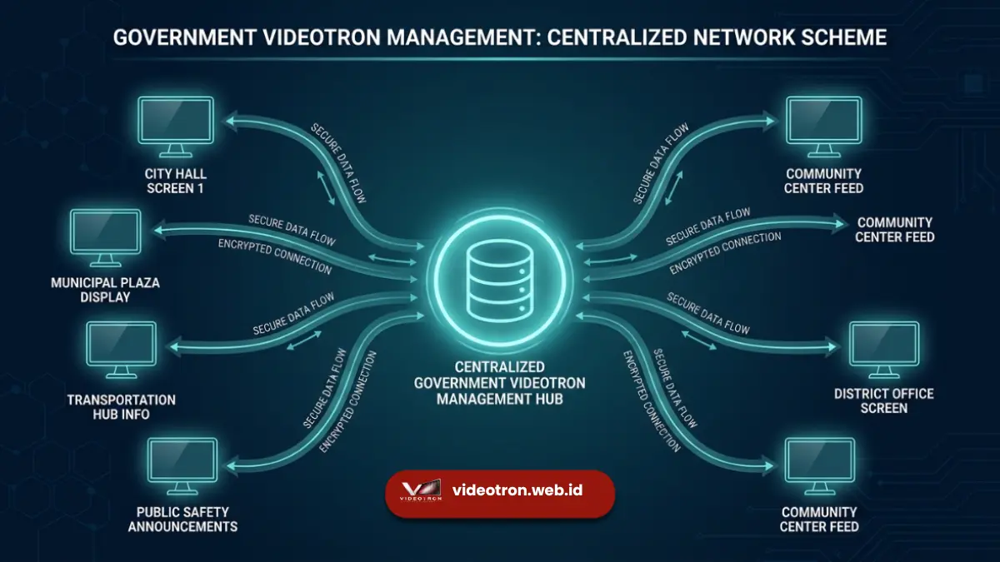

Videotron informasi publik adalah layar LED digital luar ruang yang dikelola pemerintah atau swasta untuk menyiarkan pesan layanan masyarakat dan kebijakan secara real-time.
- Berfungsi sebagai saluran komunikasi massa seketika antara pemerintah dan warga.
- Mewajibkan standar resolusi tinggi dan tingkat kecerahan yang mampu melawan cahaya matahari.
- Terikat pada regulasi tata ruang dan aturan porsi konten non-komersial pemerintah daerah.
- Memiliki tingkat retensi pesan yang lebih tinggi dibandingkan papan informasi cetak konvensional.
Apa Itu Videotron Informasi Publik?
Videotron informasi publik merupakan papan reklame digital berbasis teknologi Light Emitting Diode yang berfungsi mendistribusikan data pemerintah dan pesan sosial kepada masyarakat luas.
Papan informasi digital ini secara khusus didesain untuk ditempatkan pada area dengan lalu lintas tinggi, seperti persimpangan jalan utama, alun-alun kota, stasiun, dan fasilitas publik lainnya. Berbeda dengan videotron murni komersial yang seratus persen menayangkan iklan produk, videotron informasi publik memiliki mandat khusus untuk menyebarkan informasi vital. Fasilitas ini sering kali dimiliki langsung oleh dinas terkait dalam pemerintahan daerah, seperti Dinas Komunikasi dan Informatika (Diskominfo) atau Dinas Perhubungan. Namun, banyak juga yang dikelola oleh pihak swasta dengan perjanjian kerja sama yang mengikat mereka untuk mendedikasikan sebagian waktu tayang untuk kepentingan masyarakat umum. Teknologi ini menggantikan peran spanduk dan baliho konvensional karena kemampuannya menyampaikan informasi dinamis dalam bentuk video, animasi, dan teks bergerak.
Mengapa Videotron Efektif untuk Komunikasi Publik?
Videotron efektif untuk komunikasi publik karena mampu menarik perhatian visual melalui gambar bergerak, warna cerah, dan pembaruan data secara langsung tanpa proses cetak.
Kelebihan utama layar digital ini terletak pada aspek visibilitas dan dinamika konten. Mata manusia secara alami lebih cepat menangkap pergerakan cahaya. Ketika informasi tentang pemilu, protokol kesehatan, atau peringatan cuaca ditayangkan dalam format video pendek yang menarik, masyarakat yang melintas lebih cenderung menghentikan pandangan mereka sejenak. Selain itu, efisiensi waktu menjadi faktor penentu. Pemerintah dapat mengubah pesan di puluhan layar yang tersebar di berbagai sudut kota hanya dengan satu klik dari pusat kontrol. Kemampuan pembaruan seketika ini sangat krusial dalam situasi darurat, misalnya saat terjadi bencana alam, pengalihan arus lalu lintas mendadak, atau pencarian orang hilang darurat. Respons real-time ini tidak mungkin dicapai dengan media luar ruang tradisional.

Bagaimana Cara Kerja Sistem Videotron Publik?
Untuk memahami lebih dalam mengenai teknologi dan cara kerja sistem videotron informasi publik, kita perlu mengetahui bahwa sistem ini beroperasi melalui koneksi internet sentral yang menghubungkan server manajemen konten (CMS) dengan pemutar media pada masing-masing layar LED.
Proses penayangan dimulai dari ruang kendali pusat. Operator pemerintah atau agensi mengunggah materi video atau gambar ke dalam aplikasi Content Management System (CMS) berbasis cloud. Setelah materi disetujui, jadwal tayang diatur secara spesifik mencakup jam, durasi, dan hari tayang. Sistem cloud tersebut kemudian mendistribusikan data ke media player yang terpasang di belakang panel videotron di lokasi fisik. Media player ini bertugas menerjemahkan sinyal digital menjadi perintah visual yang menyalakan jutaan lampu LED kecil pada permukaan layar. Sistem ini juga dilengkapi sensor cahaya otomatis yang meredupkan layar di malam hari dan meningkatkan kecerahan di siang hari bolong agar tetap nyaman dilihat tanpa menyilaukan pengguna jalan.
Apa Saja Jenis Konten Informasi Publik di Videotron?
Jenis konten informasi publik di videotron meliputi kampanye kesehatan, imbauan ketertiban lalu lintas, sosialisasi kebijakan baru, peringatan cuaca, serta promosi wisata daerah. Variasi informasi yang disampaikan sangat luas namun tetap terfokus pada kepentingan umum. Pada masa pandemi atau wabah, layar ini difokuskan pada langkah pencegahan medis dan lokasi vaksinasi.
Pada masa pemilihan umum, Komisi Pemilihan Umum menggunakan fasilitas ini untuk mensosialisasikan tata cara pencoblosan dan jadwal pemilu guna menekan angka golongan putih. Selain informasi krusial, videotron publik juga dimanfaatkan untuk membangun identitas kota (city branding). Video pariwisata beresolusi tinggi yang menampilkan keindahan alam daerah atau jadwal festival seni budaya lokal sering ditayangkan untuk menarik minat wisatawan domestik maupun asing yang sedang berada di kota tersebut.
Aturan dan Standar Penempatan Videotron
Aturan penempatan videotron informasi publik mensyaratkan jarak pandang aman dari persimpangan, tidak mengganggu visibilitas rambu lalu lintas, dan memperhatikan estetika kota. Semua ini sejalan dengan aturan konten videotron informasi publik yang berlaku.
Pemerintah daerah memiliki peraturan daerah (Perda) yang mengatur ketat titik koordinat pendirian struktur videotron. Hal ini untuk mencegah polusi visual yang berlebihan di pusat kota. Struktur tiang dan layar harus lulus uji kelayakan konstruksi untuk menahan terpaan angin kencang dan gempa bumi. Dari sisi penempatan, layar tidak boleh menutupi bangunan bersejarah, monumen nasional, atau fasilitas ibadah. Pemerintah juga mengatur sudut kemiringan layar agar tidak memantulkan cahaya matahari secara langsung ke mata pengendara yang dapat menyebabkan kecelakaan lalu lintas. Kepatuhan pada standar tata ruang ini menentukan apakah izin mendirikan bangunan (IMB) untuk papan reklame tersebut diterbitkan atau ditolak.
Kesalahan Umum dalam Pengelolaan Videotron Publik
Kesalahan umum pengelolaan videotron publik meliputi penggunaan teks terlalu kecil, durasi transisi terlalu cepat, dan kegagalan memperbarui konten yang sudah kedaluwarsa.
Banyak instansi masih memperlakukan videotron sama seperti brosur cetak dengan memasukkan terlalu banyak teks ke dalam satu layar. Pengendara kendaraan bermotor rata-rata hanya memiliki waktu tiga hingga lima detik untuk membaca. Jika teks terlalu padat, pesan utama dipastikan tidak akan tersampaikan dengan baik. Masalah lainnya adalah pemeliharaan teknis (maintenance) yang buruk. Sangat sering ditemukan layar dengan panel LED mati sebagian (dead pixels) yang membuat wajah tokoh atau teks terpotong, menurunkan kredibilitas pesan pemerintah. Kegagalan mengatur kecerahan di malam hari yang menyebabkan layar terlalu terang juga sering menjadi keluhan utama warga sekitar karena mengganggu waktu istirahat dan keamanan berkendara.
Videotron informasi publik telah berevolusi dari sekadar papan pengumuman elektronik menjadi infrastruktur komunikasi kota pintar yang sangat penting. Optimalisasi fungsinya sangat bergantung pada perpaduan tiga elemen utama: penempatan lokasi yang strategis tanpa mengabaikan aspek keselamatan lalu lintas, pengelolaan konten yang ringkas serta mudah dicerna secara cepat, dan sistem pemeliharaan teknologi yang berkelanjutan. Pemerintah daerah yang mampu mengelola ketiga aspek ini akan berhasil menjadikan videotron sebagai saluran informasi utama yang dipercaya dan diandalkan oleh masyarakat luas, terutama dalam situasi krisis maupun untuk edukasi publik harian.

Hawa Nadira
LED Technology Consultant dan Visual Educator
Konsultan dan spesialis solusi display digital berdedikasi tinggi yang fokus membagikan panduan edukatif mengenai penerapan teknologi layar LED videotron untuk kebutuhan interior modern di Indonesia.